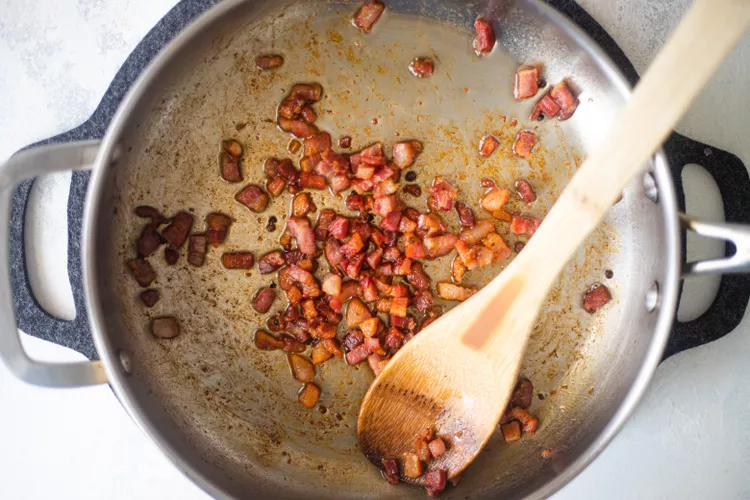
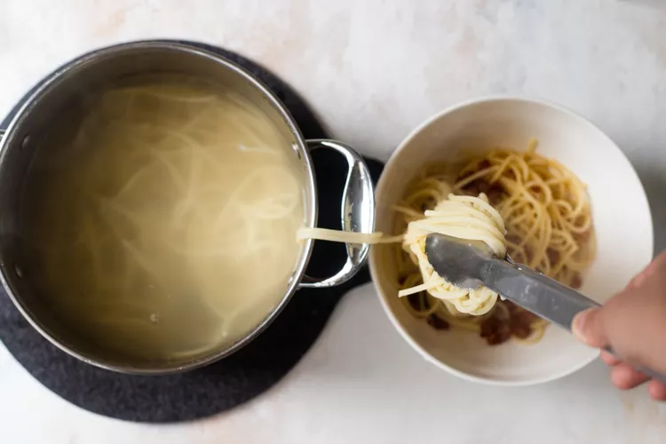
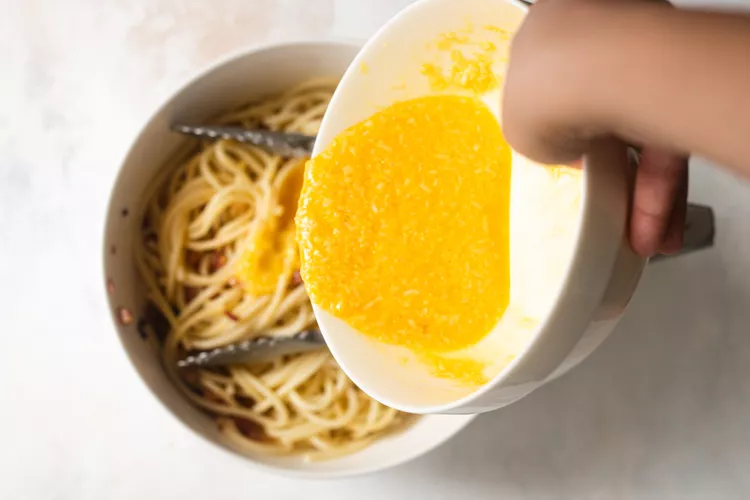
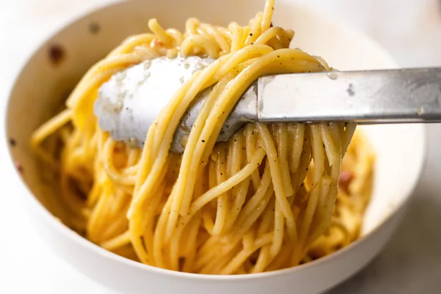

There may be no more beloved Italian dish than carbonara: hot pasta tossed with a creamy sauce of raw beaten eggs, accentuated with crisp bits of guanciale, and finished with a shower of grated aged Pecorino Romano cheese plus freshly ground black pepper. While it is also made with fettuccine, linguine, or bucatini, spaghetti remains the canonical carbonara pasta shape, and the classic recipe contains no butter, cream, or garlic.
Carbonara is most associated with Rome and the Lazio region, but as with so many Italian dishes, in Italy, its origin provokes much speculation and debate. Some connect it to pasta cacio e uova, a Neapolitan dish of pasta tossed with melted lard, beaten raw eggs, and cheese, as documented in Ippolito Cavalcanti's 1839 Neapolitan cookbook. Because the name comes from the word carbonaro, “coal burner,” some believe the dish was created as a hearty easy-to-make meal by men working outdoors for long periods. Others trace it to the Allied liberation of Rome in 1944, with American GIs bringing their daily ration of eggs and bacon to local restaurants to add to the limited Italian menu. Supporting this story is the first written reference to the dish in newspaper La Stampa in 1950, describing it as a dish prized by American servicemen. Shortly after, carbonara also appears in Elizabeth David’s classic 1954 book Italian Food.
Put a large pot of salted water on to boil (1 tablespoon salt for every 2 quarts of water.)
While the water is coming to a boil, heat the olive oil or butter in a large sauté pan over medium heat. Add the bacon or pancetta and cook slowly until crispy.
Add the garlic (if using) and cook another minute, then turn off the heat and put the pancetta and garlic into a large bowl.
In a small bowl, beat the eggs and mix in about half of the cheese.
Once the water has reached a rolling boil, add the dry pasta, and cook, uncovered, at a rolling boil.
When the pasta is al dente (still a little firm, not mushy), use tongs to move it to the bowl with the bacon and garlic. Let it be dripping wet. Reserve some of the pasta water.
Move the pasta from the pot to the bowl quickly, as you want the pasta to be hot. It's the heat of the pasta that will heat the eggs sufficiently to create a creamy sauce.
Toss everything to combine, allowing the pasta to cool just enough so that it doesn't make the eggs curdle when you mix them in. (That's the tricky part.)
Add the beaten eggs with cheese and toss quickly to combine once more. Add salt to taste. Add some pasta water back to the pasta to keep it from drying out.
 Serve at once with the rest of the parmesan and freshly ground black pepper. If you want, sprinkle with a little fresh chopped parsley.